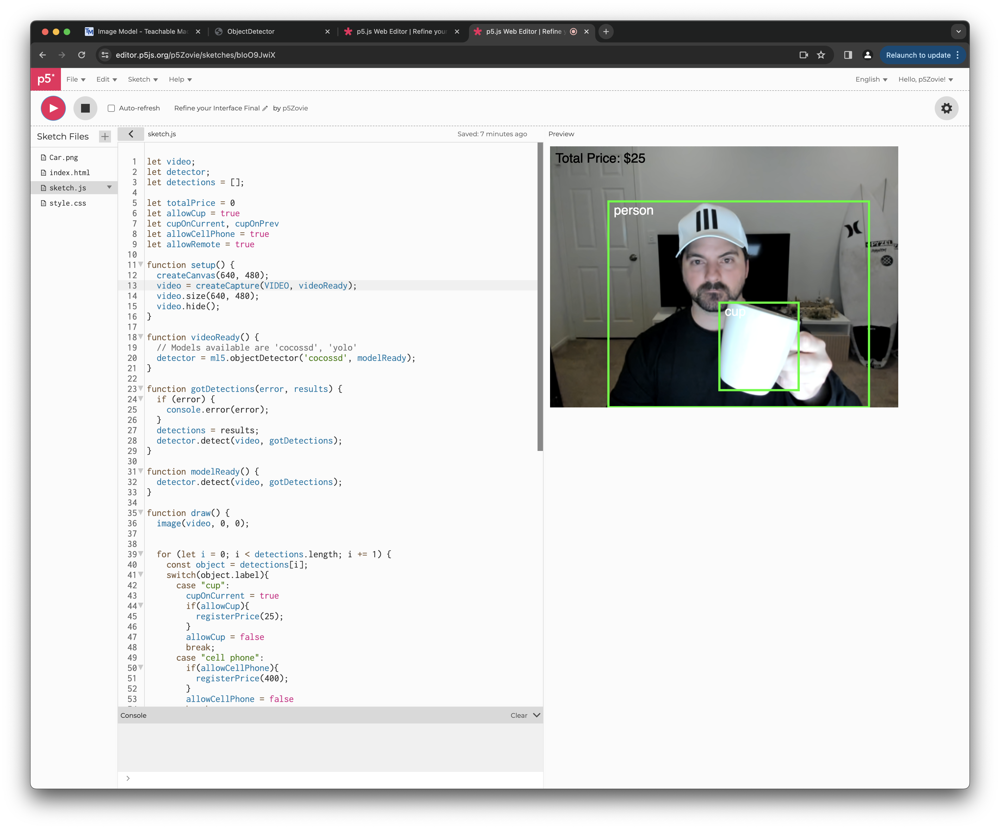
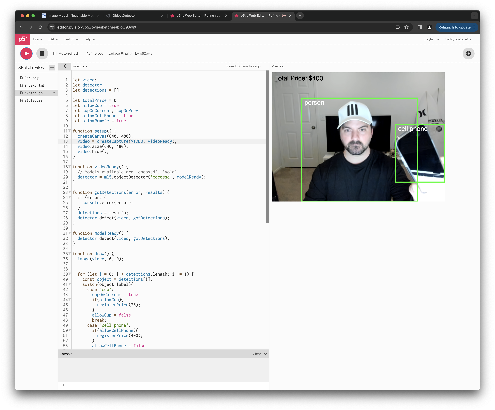
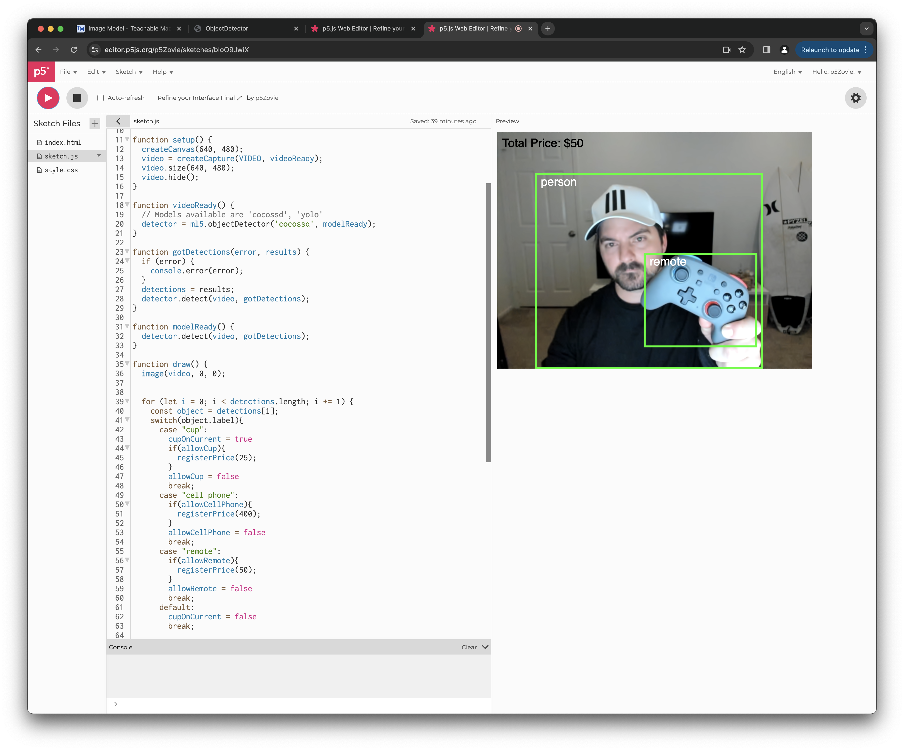

Goal of this Exercise
What am I trying to do
I wanted to accomplish the following task in ML5.JS. Scenario: If an object is detected (in video) it prints the price on the label. If multiple objects are detected it is able to detect each object and calculate their given price and print the total on the label.
Process
Step One on Refining my Interface
I wanted to know the difference between using cocossd and yolo so I followed a YouTube tutorial from "The Coding Train" Check it out here! Here is the p5.js approach I took to having fun with this exercise.
Link to p5.js Editor Code
Step Two | Identifying Static Images
I attempted to try to recognize objects in my camera using object detection with static images from the internet. Realizing that it only recognizes objects from the cocossd library I adapted to what objects it would identify and found them around the house for the next step."

Step Three | Identifying Objects in Video
I wanted objects to be recognized in video, and not just static images. I found the list of recognizable objects on ML5 and scoured the house to see if it would detect the correct objects on P5.JS. The following in an example of a keyboard."

Step Four | Identifying Objects in Video and Labeling their Total
I didn't just want to have the object detected labeled correctly. I wanted it to be associated with a price. I gave each object a price. The following coffee mug I gave a price of $25 and wanted it to return that price in the label when identified."
Step Five | The Next Object | A Cell Phone
The following image of the cell phone I gave a price of $400 and wanted it to return that price in the label when identified. If any other objects had been identified beforehand I wanted it to add that price to the total in the label."
Step Six | The Next Object | A Remote
The following image of the remote I gave a price of $50 and wanted it to return that price in the label when identified. If any other objects had been identified beforehand I wanted it to add that price to the total in the label."
Video of the Sumation of all Detect Objects
Created a video on Loom of all the objects being detected and added up in the total upon detection! Check it out here!